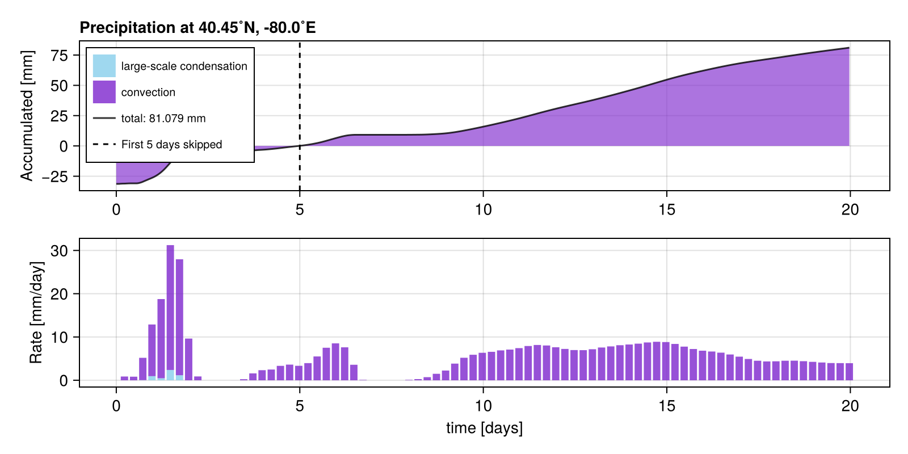
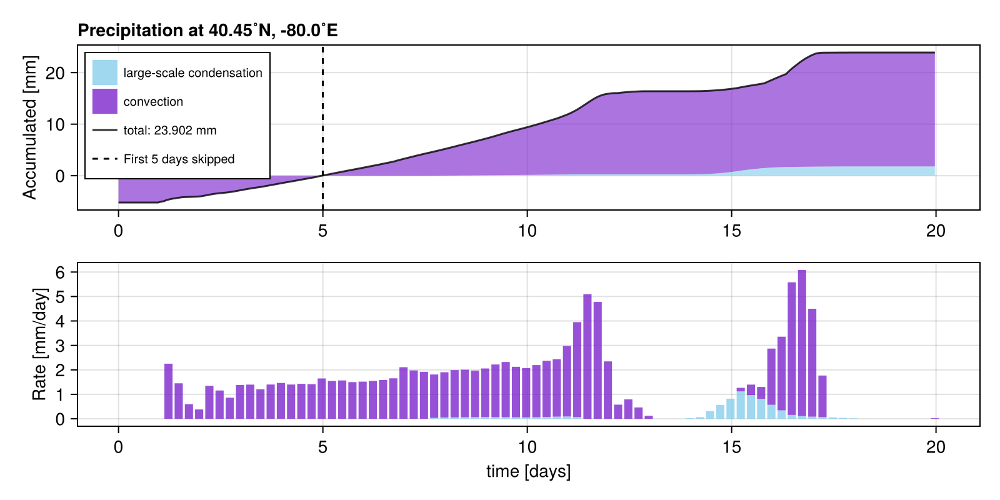
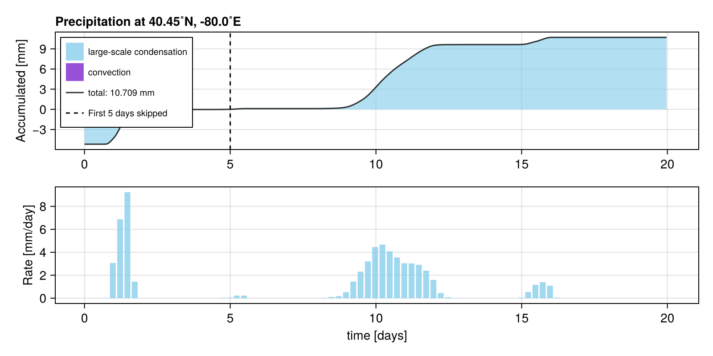
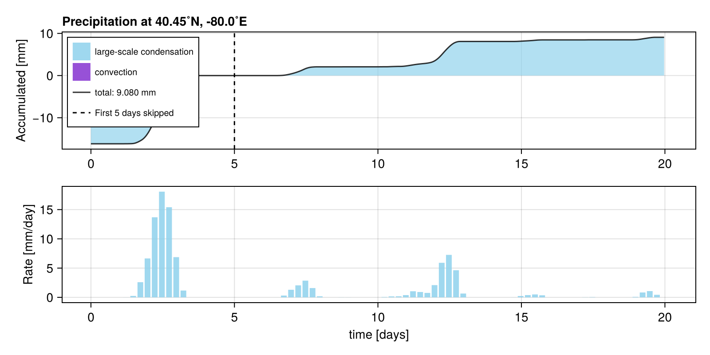
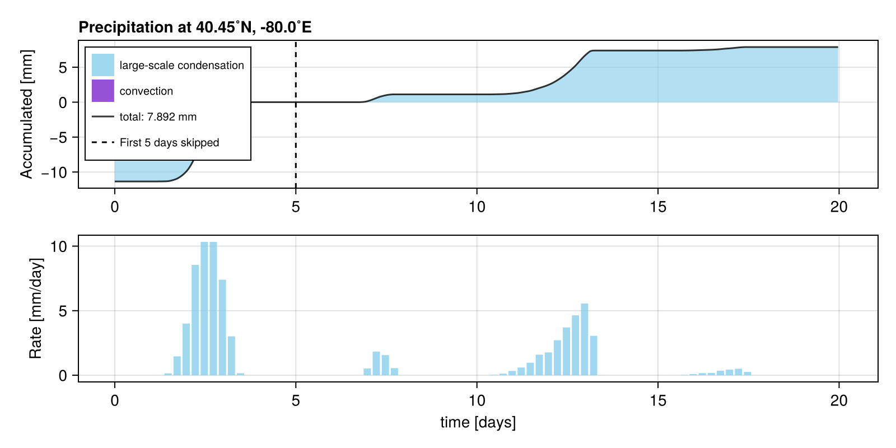

List of submissions
It follows the code and plot of the RainGauge of all RainMaker submissions to /submissions sorted in alphabetical order of the filename.
Shirin Ermis: Aqua-planet simulation with a mountain
path: /submissions/aquaplanet_mountain.jl
rank: 1. of 5 submissions
author = "Shirin Ermis"
description = "Aqua-planet simulation with a mountain"
using SpeedyWeather, RainMaker
spectral_grid = SpectralGrid(trunc=31, nlayers=10)
model = PrimitiveWetModel(spectral_grid)
# Set up aqauaplanet but add large mountain in "North Sea" after initialization!
ocean = AquaPlanet(spectral_grid, temp_equator=302, temp_poles=300)
land_sea_mask = AquaPlanetMask(spectral_grid)
model = PrimitiveWetModel(spectral_grid; ocean, land_sea_mask)
# Add rain gauge
rain_gauge = RainGauge(spectral_grid, lond=-80, latd=40.45)
add!(model, rain_gauge)
# Initialize and run simulation
simulation = initialize!(model, time=DateTime(2000, 9, 1))
# Add mountain now! details for mountain
H, λ₀, φ₀, σ = 4000, 2, 51, 5 # height, lon, lat position, and width
set!(model, orography=(λ,φ) -> H*exp(-spherical_distance((λ,φ), (λ₀,φ₀), radius=360/2π)^2/2σ^2))
# Run simulation for 20 days
run!(simulation, period=Day(20))
# Plot the results (not needed for submission but doesn't hurt!)
using CairoMakie
# heatmap(model.orography.orography, title="My orogoraphy [m]") # check orography
RainMaker.plot(rain_gauge, rate_Δt=Hour(1))
Milan: Aquaplanet
path: /submissions/aquaplanet.jl
rank: 2. of 5 submissions
author = "Milan"
description = "Aquaplanet"
using SpeedyWeather, RainMaker
spectral_grid = SpectralGrid(trunc=31, nlayers=8)
# define aquaplanet
ocean = AquaPlanet(spectral_grid, temp_equator=302, temp_poles=273)
land_sea_mask = AquaPlanetMask(spectral_grid)
orography = NoOrography(spectral_grid)
model = PrimitiveWetModel(spectral_grid; ocean, land_sea_mask, orography)
rain_gauge = RainGauge(spectral_grid, lond=-80, latd=40.45)
add!(model, rain_gauge)
simulation = initialize!(model)
run!(simulation, period=Day(20))
Tim Reichelt: North Sea mountain
path: /submissions/north_sea_mountain.jl
rank: 3. of 5 submissions
author = "Tim Reichelt"
description = "North Sea mountain"
using SpeedyWeather, RainMaker
spectral_grid = SpectralGrid(trunc=31, nlayers=8)
model = PrimitiveWetModel(spectral_grid)
rain_gauge = RainGauge(spectral_grid, lond=-80, latd=40.45)
add!(model, rain_gauge)
simulation = initialize!(model)
# add a massive mountain at 51.75°N, 0°W, *after* model initialization
# using spherical_distance for geodesic distances, use radius=360/2π for distance in degrees
H, λ₀, φ₀, σ = 4000, 2, 51, 5 # height, lon, lat position, and width
set!(model, orography=(λ,φ) -> H*exp(-spherical_distance((λ,φ), (λ₀,φ₀), radius=360/2π)^2/2σ^2))
run!(simulation, period=Day(20))
Milan: default
path: /submissions/default.jl
rank: 4. of 5 submissions
author = "Milan"
description = "default"
using SpeedyWeather, RainMaker
spectral_grid = SpectralGrid(trunc=31, nlayers=8)
model = PrimitiveWetModel(spectral_grid)
rain_gauge = RainGauge(spectral_grid, lond=-80, latd=40.45)
add!(model, rain_gauge)
simulation = initialize!(model)
run!(simulation, period=Day(20))
Milan: Atlantic mountain
path: /submissions/atlantic_mountain.jl
rank: 5. of 5 submissions
author = "Milan"
description = "Atlantic mountain"
using SpeedyWeather, RainMaker
spectral_grid = SpectralGrid(trunc=31, nlayers=8)
model = PrimitiveWetModel(spectral_grid)
rain_gauge = RainGauge(spectral_grid, lond=-80, latd=40.45)
add!(model, rain_gauge)
simulation = initialize!(model)
# add a massive mountain at 50°N, 35°W, *after* model initialization
H, λ₀, φ₀, σ = 4000, 325, 50, 5 # height, lon, lat position, and width
set!(model, orography=(λ,φ) -> H*exp((-(λ-λ₀)^2 - (φ-φ₀)^2)/2σ^2), add=true)
run!(simulation, period=Day(20))